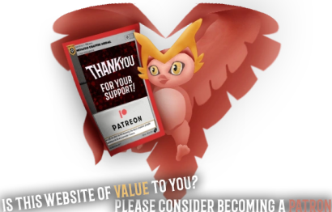

About MetaZoo Games
If you'd like to get in contact with Jody Mitoma (MetaZoo HQ Webmaster) about an error in information, a bug or inconsistency with the site, or would just love to help provide data or photos to the site for future MetaZoo fans to gaze upon for years to come...
I would love for you to join the MetaZoo HQ Discord channel and hit me up in there at any time, any day! Thank you for digging deeper into this website. I'm really glad to see you here.
MetaZoo Games LLC was founded by Michael A. Waddell in 2020 in New York City, New York, and consists of over a dozen people responsible for the ever-growing MetaZoo trading card game that initially launched through a successfully funded Kickstarter campaign backed by 255 people with a pool of $18,249 in late 2020.
Over the course of the months since, the team has worked hard to ensure that other MetaZoo products and accessories were made available, and has made quick partnerships with companies and people such as Topps and Steve Aoki.
MetaZoo Games continues to expand its line of available products with haste, and has ambitious but reachable goals for many, many years down the road, including, but not limited to a Netflix series, a movie, physical coin dispensaries, and so much more.
As of November 2021,MetaZoo Games is now a team of over 30 people, and continues to grow its staff, collaborations and products at impressive rates.
The ultimate goal is to have 56 MetaZoo product-verticals over the course of 2022.
As of January 2022, MetaZoo Games consists of 35 staff.
On November 14, 2022, MetaZoo Games announced their new foundation, called The MetaZoo Foundation. To celebrate the foundation's launch, they released a Thanksgiving promo card which was drawn in part by PONCHO, and in part by Akara; who is Gary and Thuan Haase's daughter; creators of Autism Instruct, who have become the inaugural member of The MetaZoo Foundation. $50,000 was raised by MetaZoo fans around the world through the sale of this promo card, listed at $5 on the MetaZoo Marketplace website.
As of November 2022,MetaZoo Games consists of over 40 staff.
The MetaZoo Trading Card Game is based around cryptids and folklore from around the world. The first set, named Cryptid Nation, was released on July 30th, 2021 and focuses on cryptids and powerful
artifacts based out of the United States of America. Future sets will focus on cryptids from other
countries around the world, while new sets will also be created based out of the US as well.
In the words of MetaZoo Games themselves:
MetaZoo is a Collectible Card Game with groundbreaking mechanics that break the 4th Wall. Choose where you play wisely, because your surroundings dictate how powerful your cards are! Cast Water Spells when it's raining to increase their effectiveness and partner Dark Beasties during nighttime to augment their power. It's not enough to build a powerful deck anymore, you might choose your Arena!
- MetaZoo Games LLC
VIEW THE FULL METAZOO GAMES TEAM
VIEW THE METAZOO GAMES ARTISTS
LEARN MORE WITH OUR LARGE LIST OF FAQS
